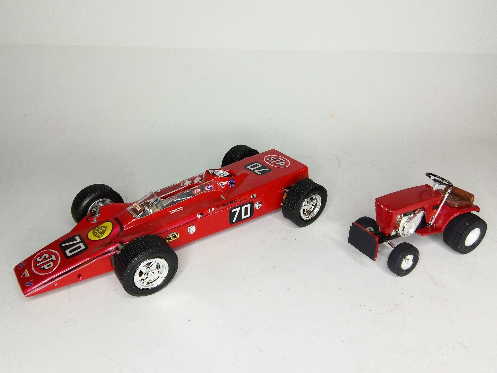
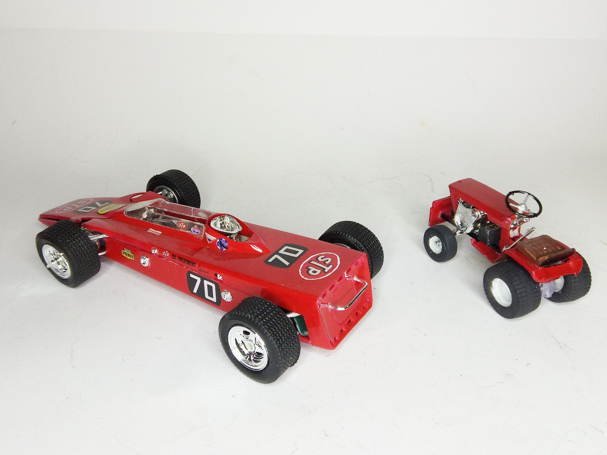

Auto e veicoli stradali · scale model archive
Lotus STP Turbine Indy Car
Lotus STP Turbine Indy Car — Kit: MPC, Scale: 1/25. #Lotus #Turbine The Lotus 56 was designed by Maurice Philippe as Lotus 1968 entry in the Indianapolis…

Photo gallery

English description
#Lotus #Turbine
The Lotus 56 was designed by Maurice Philippe as Lotus 1968 entry in the Indianapolis 500, replacing the successful Lotus 38. Based on Parnelli Jones' STP Granatelli turbine car that almost won in 1967, Colin Chapman's team again produced an even more innovative design. The 56 was shaped like a wedge on wheels, in the same vein as the later Lotus 72, which was also designed by Philippe and Chapman. The engine of the 56 was also noteworthy, as it was a Pratt & Whitney gas turbine engine of over 500 bhp. To get the best out of the power produced, the 56 was fitted with four wheel drive, something also used on the Lotus 63 without success. In the race Joe Leonard was leading with ease with just a handful of laps to go when the engine failed. Lotus' innovation incurred the wrath of the governing body of American Motorsports, and USAC deemed turbine cars and four wheel drive illegal shortly after, much to Chapman's frustration.
#1/25 #MPC
Descrizione italiana
La Lotus 56 fu progettata da Maurice Philippe come vettura Lotus per la 500 Miglia di Indianapolis 1968, sostituendo la fortunata Lotus 38. Basata sulla vettura a turbina STP Granatelli di Parnelli Jones, che aveva quasi vinto nel 1967, il team di Colin Chapman produsse un progetto ancora più innovativo. La 56 aveva una forma a cuneo su ruote, nello stesso spirito della successiva Lotus 72, anch’essa progettata da Philippe e Chapman. Il motore era una turbina a gas Pratt & Whitney da oltre 500 hp; per sfruttarne al meglio la potenza, la vettura aveva la trazione integrale, usata anche sulla Lotus 63 senza successo. In gara Joe Leonard era saldamente in testa a pochi giri dal termine quando il motore cedette. L’innovazione Lotus irritò l’ente regolatore americano, e poco dopo l’USAC dichiarò illegali le vetture a turbina e la trazione integrale, con grande frustrazione di Chapman.